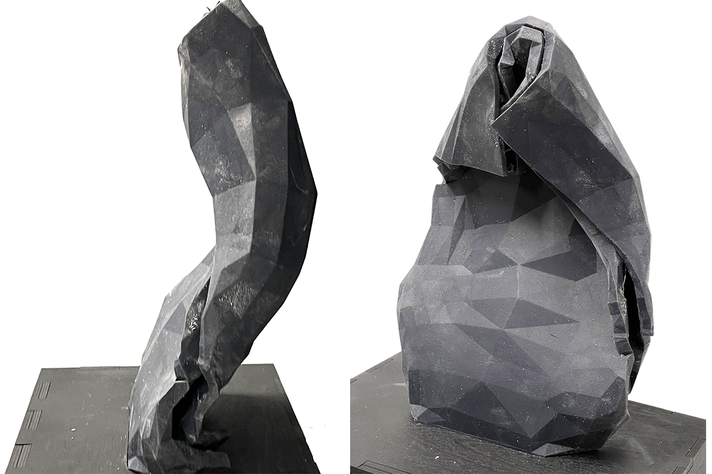
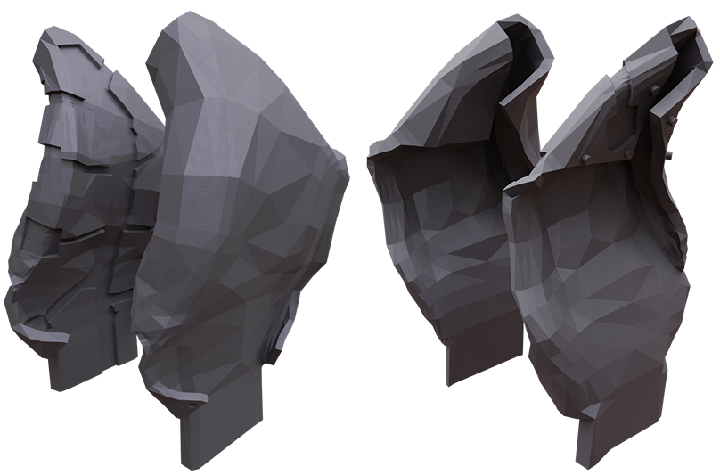
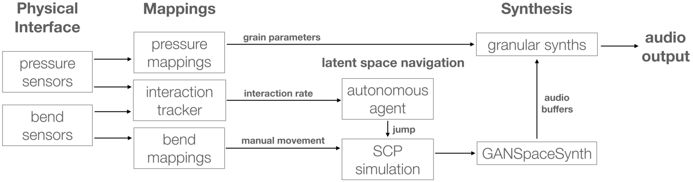
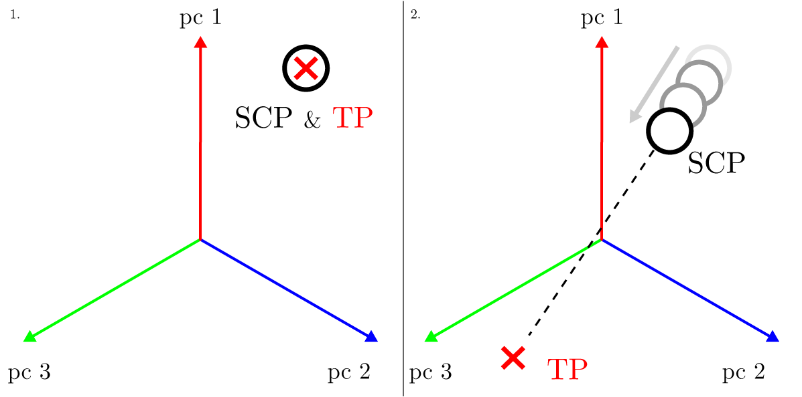
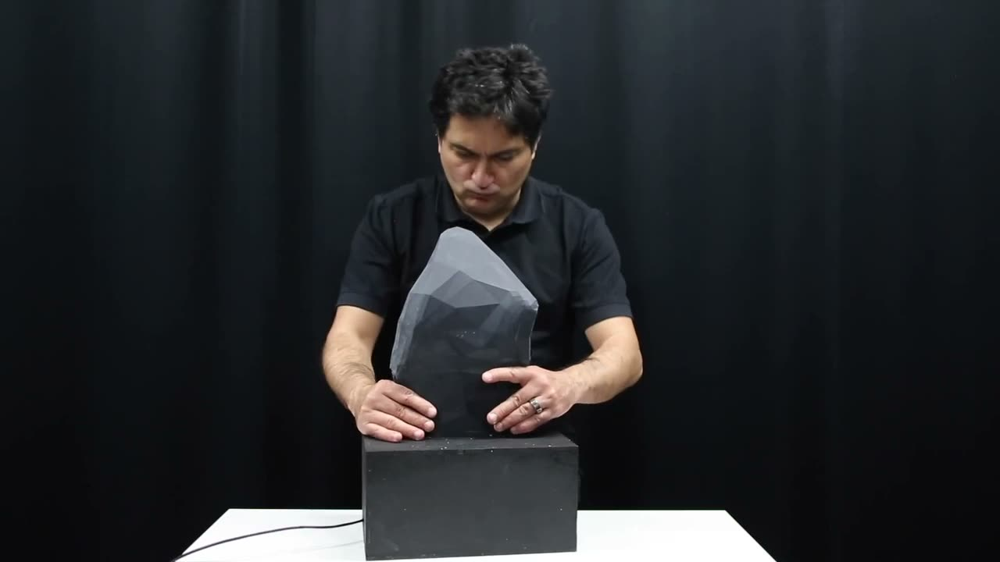

AI-terity 2.0: An Autonomous NIME Featuring GANSpaceSynth Deep Learning Model
Abstract
In this paper we present the recent developments in the AI-terity instrument. AI-terity is a deformable, non-rigid musical instrument that comprises a particular artificial intelligence (AI) method for generating audio samples for real-time audio synthesis. As an improvement, we developed the control interface structure with additional sensor hardware. In addition, we implemented a new hybrid deep learning architecture, GANSpaceSynth, in which we applied the GANSpace method on the GANSynth model. Following the deep learning model improvement, we developed new autonomous features for the instrument that aim at keeping the musician in an active and uncertain state of exploration. Through these new features, the instrument enables more accurate control on GAN latent space. Further, we intend to investigate the current developments through a musical composition that idiomatically reflects the new autonomous features of the AI-terity instrument. We argue that the present technology of AI is suitable for enabling alternative autonomous features in audio domain for the creative practices of musicians.
[key]
Introduction
The use of artificial intelligence (AI) in artistic domains is not an unknown phenomenon. As such, the process of the technological realisation is an integral part of the development of artistic practices in music. In the context of the discussion around AI, the term is often used to refer to more advanced forms of machine learning that allow computers to learn from experience and make decisions based on their experiences. This process also referred to as “machine intelligence". It was defined as “the science and engineering of making intelligent machines", a definition which still stands today to describe machines with more advanced autonomous features [1]. At the same time, the implication of AI methods involves many challenges, in various phases they have been applied to digital musical instruments (DMIs). For instance, despite the lack of clarity on the algorithm’s available power to autonomously affect the music-making experience, there is a need to explore the technologies and methods to gain more insight to offer novel approaches to autonomous processes for music practices. Expanding the current use of artificial intelligence to the creative practice of musicians, in our ongoing research we focus on ascribing alternative autonomous features and intelligent behaviours on new musical instruments.


Figure 1. AI-terity 2.0
In the work we present here, we focus on the development on our AI-terity instrument. Our major contribution in this paper is the new deep learning architecture that we implemented, autonomous features that we built in relation to the deep learning model and the improved 3D model of the control-interface structure. Further, we introduce Uncertainty Etude #2, the composition that idiomatically reflects the new autonomous features of the AI-terity instrument (Figure 1). The current developments in our work demonstrate the ability to build complex interactive music systems with high levels of autonomy capabilities.
Related Work
Defining autonomy and agency of software systems has proven to be a complex problem and has thus resulted in many definitions. In the subfield of agent systems in computer science, some scholars see autonomy as being a condition of agency, stating that agency at a minimum requires “autonomy, social ability, reactivity and proactiveness" [2]. Others define an autonomous system as “a system situated within and a part of an environment that senses that environment and acts on it, over time, in pursuit of its own agenda and so as to effect what it senses in the future" [3].
In the NIME context, autonomy and agency are also discussed in multiple ways. The agency has been discussed with a focus on the ways agency arises through the autonomous acts of the musical instrument that forms and supports the musical identity [4], building a basis for collaborative music actions between musician and the musical instrument [5]. Tatar et al. [6] define autonomy in musical generative systems as being a spectrum, ranging from purely reactive (“rule based”) to completely autonomous systems (“generic”). In the first, the system has a set of static rules defined by the system’s creator which map input to output. In the latter, the system has few or no static rules but can instead learn and change its behaviour over time. Then again, Holopainen [7] sees autonomous musical system as not basing their output on any real-time input, thus being autonomous of humans in their generation. Additionally, autonomy has also been discussed as meaning that an instrument is self contained and independent of external systems, thus better insuring their longevity [8].
Various responsive improvisation systems have explored alternative design, performance and composition ideas applied to their participatory status, autonomy of operation and in ways the interactivity is provided. In our previous work, we introduced a live musical instrument which monitors and helps to maintain or increase the musician’s engagement while playing [9]. This happens by observing the player and estimating their current engagement level in real-time. When low engagement levels are detected, the instrument autonomously makes changes to help the player recover to higher levels of engagement [10].
An early example of an autonomous instrument is Voyager by George E. Lewis [11]. Lewis describes Voyager as a “nonhierarchical, interactive musical environment that privileges improvisation". The system can improvise together with up to two human musicians, while playing up to 64 single-voice MIDI outputs. Voyager receives the human musician music as MIDI inputs, which it then uses (or sometimes ignores) in its complex set of algorithms from which the output MIDI streams are created. The autonomy of Voyager is thus implemented not as some form of machine learning, but as manually designed algorithms which take into account aspects such as “...tempo (speed), probability of playing a note, the spacing between notes, melodic interval width, choice of primary pitch material (including a pitch set based on the last several notes received) octave range, microtonal transposition and volume".
On the same vein, GuitarBot [12] presents an autonomy entity by identifying particular type of relationship between the musician and the instrument. GuitarBot is an autonomous robotic instrument designed by Eric Singer. It comprises four strings, which it plays in a fashion similar to a sliding guitar. Compositions for the instrument take the form of a computer program, which controls the instrument using MIDI. The composition discussed in the paper, called GuitarBotana, was created by the violinist Mari Kimura and is meant to accompany her violin playing. The composition at times follows a fixed score, at times improvises, and at times reacts dynamically to what Kimura is playing. For example, in some parts it “follows [her] closely and produces tones to fill out the harmony of the piece”. Auslander calls the autonomy of GuitarBot an illusion. He argues that while it is more autonomous than a conventional instrument, Kimura still programs what GuitarBot plays during the scored sections of the composition, resulting in only relative autonomy. It is also notable that Kimura knows exactly when GuitarBot will be following a fixed score and when it will be responding to her and on what basis.
Eigenfeldt et al. [13] approach agency from the perspective of musical improvisation. They created a multi agent system, where the agents improvised rhythmic beats among themselves. The system has a conductor agent, which loosely controls the system using high-level parameters such as “density" (the number of notes played by the agents in the system). Beyond the control of the conductor, the agents decide the patterns at which they play their own instruments. They also simulate social interactions, through which they decide which other agents to musically interact with.
We incorporated these ideas into our work and we developed new autonomous features for the AI-terity instrument that are not based on counter musical actions between the musician and the instrument. We implemented autonomous features that are capable of changing audio synthesis module’s responses to audio sample generation in our deep learning model.
AI-terity 2.0
AI-terity 1.0 was 3D printed from a mix of white and black photopolymer material and used pressure and capacitive sensors to control the parameters of a sample-based granular synthesis [14]. In this work, we iterated on the previous design. Besides the developments on the autonomous features of the instrument, the primary goal was to improve on the issues with the previous control interface;
The uneven thickness of the 3D model caused some areas to tear when the interface was manipulated.
The shape and thickness of the interface allowed for a low number of deformations.
The original 3D model was not designed with sensors in mind, which resulted in the previous version having no space for the sensors inside it.
Mainly using pressure sensors resulted in a lack of fidelity in detecting different types of deformations. For example, a squeeze and a bend resulted in similar sensor activations.
Non-Rigid and Deformable Interface
To solve the issues described above, we applied some changes to the 3D model of the interface. Firstly the model was designed to uniformly thicken in order to avoid the thin sections of the old interface. Secondly, we folded back the lower corners of the model and bent the top spine forward to create a shape which provides affordances that allow musicians to manipulate it in more ways than the AI-terity 1.0 model did. Thirdly, we indented parts of the inside surface of one of the two halves to room for the sensors. And lastly, we decided not to use the unreliable capacitive sensors, instead we added bend sensors to the corner folds and the top spine of the model to allow for more fine-grained sensing of manipulations of the interface. Figure 2 shows the 3D drawings of the control interface.


Figure 2. The new 3D model of the control-interface structure.
Audio Synthesis
In AI-terity 1.0 [14], we used the deep learning model GANSynth [15] to generate audio samples for the digital audio synthesis module in our instrument. GANSynth takes as an input, a point in its 256-dimensional latent space and outputs an audio sample based on it. The problem with this model is that the structure of the latent space is unknown as resulting in little control of what samples are generated.
The solution we found for this was to apply the GANSpace method proposed by Härkönen et al. [16] on the GANSynth model. We implemented a novel hybrid architecture, GANSpaceSynth. The audio synthesis was improved by incorporating GANSpace method to find significant directions in the deep learning model’s latent space. This allows the audio synthesis to sample the latent space in a more structured way.
GANSpaceSynth
In GANSpaceSynth, we use Principal Component Analysis (PCA) to find significant latent directions in the GANSynth activation space. These directions are then used to sample the latent space more intentionally. To obtain a point in the activation space which we can synthesise from, we compute a linear combination of the PCA directions, with adjustable coefficients giving the distance to move along each direction, starting from a given origin. As our origin, we choose the global mean of the activations used to compute the PCA. In the original GANSpace paper, the authors mention that they were able to find directions which controlled very specific traits of the output image, such as the colour of a car or the angle of the camera [16]. In our results, the directions were more entangled and not always as cleanly mappable to a distinct trait, but rather to more multifaceted characteristics in the output samples. The exact impact of the found directions depends on the training dataset, and our interest has mainly been in training on snippets of musical material. This is in contrast to the NSynth dataset originally used for GANSynth, which contains a wide variety of temporally aligned single-note instrument sounds. This choice of ours explains the entanglement we find.
We trained our GANSpaceSynth model on music snippets. Since these short phrased of audio recordings cannot be meaningfully described with a single pitch, we effectively eliminated GANSynth’s pitch conditioning by setting all pitch labels to the same value. Following that we trained the model pruu with the dataset that was based on the discography of Miranda Kastemaa. This dataset mostly contains electronic downtempo and ambient tracks. The resulting model generates rather garbled approximations of the original music with smeared transients. Elements are recognisable mainly from the longer tracks in the dataset, suggesting that the larger amount of samples from these significantly biases the model. Table 1 demonstrates sounds and the figure 3 shows their spectrograms generated at specific points on the plane spanned by the top two principal components, along with some perceived characteristics of these sounds. It seems like the first component in Table 1 may influence the extent to which drum beats are present and the second component has some relation to melodicity, but definite conclusions are difficult to draw as a lot of entanglement seems to be taking place. The third component also has a strong influence, with e.g. the sound at having a faster beat compared to . In our experience with various trained models, components after the third one mostly do not have significant effects, and we opt to discard them for the purposes of AI-terity. By doing this, we do lose some of the model’s variance, which at this time we have not quantified.
Table 1. Perceived Audio Characteristics from PCA Components
Audio 1 beats, monotonous | Audio 2
| Audio 3 beats, melody blend | Audio 4 | Audio 5 ambience and noisy* |
|---|---|---|---|---|
Audio 6 | Audio 7
| Audio 8
| Audio 9
| Audio 10
|
Audio 11 beats, hints of melody | Audio 12
| Audio 13 beats, bass, hints of melody | Audio 14
| Audio 15 ambience, hints of melody* |
Audio 16
| Audio 17
| Audio 18
| Audio 19
| Audio 20
|
Audio 21 beats, chaotic | Audio 22
| Audio 23 beats, melodic* | Audio 24
| Audio 25 ambience, melodic |
(* Original track clearly recognisable) | ||||
Our hybrid architecture GANSpaceSynth model has potential in enabling autonomous instruments to decide what characteristics of audio samples to play with, allowing for more coherent and controlled compositions. Where previous works using GAN generated audio usually sampled the latent space randomly or interpolated between two samples, our method allows for more controlled sampling by for example moving the sample point along the directions found by PCA.

Figure 3. The Spectrogram images of the audio samples in relation to their specific points generated by the PCA.
Generating Audio Samples in Real Time
In the previous version of the AI-terity we used a MacBook Pro laptop computer and it does not include CUDA-capable GPUs which is required for GPU acceleration of TensorFlow code. We generated audio samples on CPU. In our tests, the performance of synthesising a batch of eight four-second samples with GANSpaceSynth on an Intel Core i7-4650U CPU @ 1.7 GHz, the first time after loading the model takes about 18 seconds (generation rate 28 kHz). On subsequent generations, the time drops to 5 seconds (generation rate 102 kHz). To achieve faster synthesis with GANSpaceSynth, in the current development we built a mini-PC with an external GPU. We used an Intel Core i7-10170U CPU @ 1.1GHz and NVIDIA GTX 1080 Ti GPU connected via Thunderbolt 3, in which we used Ubuntu Linux 20.04.1 LTS. After the initial warmup, this system generates an eight-sample batch on the CPU in 1.2 seconds (generation rate 107 kHz). As expected, on GPU the time falls dramatically to about 65 milliseconds (generation rate 2000 kHz). Our minimum generation latency is therefore 65 ms. In all cases, we generate using the default GANSynth sample rate of 16000 Hz.
A GAN architecture tailored for conditional synthesis was proposed by Kumar et al. in MelGAN [17], demonstrating substantial performance improvements over comparable mel-spectrogram inversion models such as WaveNet [18], ClariNet [19] and WaveGlow [20]. They achieved generation rates of 51.9 kHz on CPU (Intel Core i9-7920X @ 2.90GHz) and 2500 kHz on GPU (NVIDIA GTX 1080 Ti). Performance of the different GAN models seems to be roughly in the same ballpark. Improving performance, especially latency, will be crucial in enabling more interactive uses of deep learning models, and we hope to see further advances in this area. At the same time, our current achievement of real-time audio synthesis has been satisfactory in live performance of the Uncertainty Etude #2 composition with AI-terity 2.0, using an external GPU.
Autonomous Nature and Functionality
The physical interface of the AI-terity 2.0 modulates the parameters of a granular synthesiser1 in which audio samples are used from the GAN latent space. Figure 4 shows the functional parts of the the system in building blocks. In latent space, we define a specific position called Synthesis Center Point (SCP) that the instrument monitors its movement. It is possible to move the SCP along the three-dimensional subspace of the latent space, which are formed and connected by the three most significant directions found through the principal component analysis discussed in GanSpaceSynth section. Figure 5 illustrates SCP’s movement in the GANSpaceSynth latent space. The point can be moved in one of two ways: by the musician manipulating the instrument and by the instrument autonomously moving its position. In this section we will first discuss how the instrument modulates the granular synthesis, then how it samples the latent space and finally how the position moves through it, both through musician input and by autonomous action.


Figure 4. Building block diagram of the AI-terity system components.
Samples are generated by GANSpaceSynth based on the SCP. A set of points, each corresponding to one of the interface’s pressure sensors, is distributed evenly onto the surface of a small sphere centered on the SCP. The radius of this sphere is set at a constant value. GANSpaceSynth receives each of these points on the sphere as input and generates a corresponding sample. Because we are able to sample the latent space with such low latency, the instrument is able to update these samples more than ten times a second.
The musician can navigate through the latent space by deforming the control interface part of the instrument. The manipulation is detected by the bend sensors, each of which has their activation mapped onto two PCA directions. The mapping is done so that a bend sensor moves the SCP along the first of these dimensions with a positive amount and along the second at a smaller negative amount. The instrument can also autonomously move the SCP. The goal of this autonomous behaviour is to keep the musician on their toes, by never allowing them to stay in one place too long. To do that, the instrument continuously monitors the interaction rate of the musician, which is the running average of the change in the instrument's position in the latent space over time. The low interaction rate at a certain period of time indicates that the musician has found an interesting position in the latent space, and thus the JUMP process will be triggered. The JUMP process works by generating a Target Point (TP), which the instrument will move towards over a few seconds. The TP is generated by reflecting the SCP across the origin of the latent space, except when the SCP is too close to the origin of the space, in which case a random one is generated. It’s worth noting that during this interpolation, the musician can still keep manipulating the SCP. This allows to keep a sense of agency, even when things are in flux.
In addition to having the instrument’s position move toward the TP, it also has a type of gravitational effect on the SCP, which stops the musician from moving the position too far away from the TP. This is done to stop the position of the instrument from moving too far away from the origin of the latent space, because the quality of the samples deteriorates if they exceed its limits. The SCP movement is handled by what is essentially a simple physics simulation updating in short discrete ticks. GANSpaceSynth runs independently of the simulation’s tick rate, generating new samples as frequently as the hardware allows.
The autonomous nature of the instrument reflects this autonomous behaviour that aims at keeping the musician in an active and uncertain state of exploration. On Tatar’s [6] autonomy spectrum, we see the instrument as falling somewhere in the middle ground. The behaviour is complex enough as to not be purely reactive. At the same time, the methods of reaching the behaviour’s goal do not represent features to be fully autonomous.


Figure 5. SCP can move along the three-dimensional subspace of the latent space. On the right, target point (TP) jumps across the origin and the synthesis center point (SCP) starts moving towards it.
Composition
Following the development of a common framework for performance practices of new musical instruments as discussed in [21], we composed the piece Uncertainty Etude #2, idiomatically reflecting the autonomous properties and the audio synthesis features in the AI-terity instrument. In this composition, we considered the instrument’s affordances for interaction to be contextualised as part of idiomatic patterns which influence the musical patterns of the composition. Similar influences exist in traditional instruments, digital musical instruments, or software languages where the idiomatic patterns affect the exploration that characterises much of the musical instrument [22]. To define what idiomatic patterns to consider in the composition, first, the authors Koray Tahiroğlu and Miranda Kastemaa elaborated a set of hand-held actions that were recognised as musical gestures.
Musical Gestures
In AI-terity instrument, the parameters of the granular synthesis are modulated by the activation of the pressure sensors. Non-rigid and stiffness characteristic of the instrument influence certain hand-held actions to appear and allows force/pressure input to form particular type of musical gestures for the instrument. We translated these actions into certain structures in order to define what a gesture is within our instrument. The sonic qualities of the sounds produced by musical gestures are determined by a combination of the training dataset's characteristics and the mapping from sensor inputs to granular synthesis parameters. Here we describe them in relation to the specific trained-model that we work with in this composition. The musical gestures in AI-terity are considered as followings:
Amount of pressure applied
We broadly distinguish between light, medium and heavy levels of pressure. The level of pressure is considered light when it barely triggers the playback of grains. Light pressure causes short and sparse grains to be played from indices around the beginning of the audio sample. At medium pressure, the grains grow in length and density as well as begin to overlap. The index moves toward the centre of the sample. At high pressure, grain density and length grow to their maximum values and fully overlap, while the index moves toward the end of the sample.
Speed / rate of change in pressure
Varying the amount of pressure over time gives different shapes to the granulator sounds. For example, constant pressure produces a drone or, at low pressure, more of a crackle sounds. Slow changes produce sweeps over the grain density/length and the content of the generated sample. Quick variations result in more discrete sonic events.
Amount of bending the opening points
Bending the opening points that are located on the corner points of the instrument, moves the Synthesis Center Point (SCP) in different directions in the GANSpaceSynth latent space, controlling the prevalence of different sonic features in the generated samples. A musical gesture may also involve no bending at all.
Uncertainty Etude #2
In coherence with the musical gesture vocabulary, the authors Koray Tahiroğlu and Miranda Kastemaa crafted the piece Uncertainty Etude #2 by expanding musical gestures into longer musical phrases with an aesthetic interest and appropriateness for the instrument. The generated audio samples2 are in a continuous state of transformation, constantly changing in this composition. This transformation is clearly revealed by the beginning of the piece. In this state of transformation, the musician is now faced with the opportunity to create a new relationship with AI-terity. It is as if the musician is thrown into the space of the musical universe with continuously transforming cluster of sounds, facing with the challenge of forming a new transitional relationship.
The piece Uncertainty Etude #2 opens with a soft, slow phase, unfolding the basic idea in which the instrument is played over applying more-or-less constant medium pressure to the left and right sides of the lower section of the instrument. The musical gestures create a droning sound that shifts in character as AI-terity detects a low interaction rate and initiates jumps to new target points. This phase is followed by moving up to the lower middle row of the instrument. The musician applies constant medium pressure to the right side, and varies the amount of pressure on the left side in a pulsating manner, like a heartbeat. These gestures create washes of sound over a constant drone. The resulting higher interaction rate prevents AI-terity from jumping autonomously and gives the musician a more active role in creating the musicscape.
After a short pause, in phase 3, the musician plays rapidly, alternating between different parts of the middle rows of the instrument, applying short periods of high pressure on both sides. The video clip below shows the part of the performance of the composition that gradually develops in phase 3. It produces bursts of sound and a climax occurs, after which the piece enters into phase 4. The musician plays the top row of the instrument, applying medium pressure to the right side and pulsating pressure on the left side as in phase 2. Additionally, the musician opens the corner bend sensors occasionally to move the synthesis center point around and change the generated audio features. The continuous transition between the points in latent space gets into the final phase, in which the musician aims to maintain a constant low pressure on both sides of the upper middle part of the instrument to play short, sparse grains of sound. AI-terity, again, begins to autonomously jump around the latent space to change the features of the generated samples. One interesting aspect of the composition is that the music gradually gets more relaxed and more tranquil until the musician finally starts to see a sense of a new point in the instrument’s latent space that breaks the flow of the composition and puts music into another transition. The music changes, moves and transforms in an uncertainty.

▶Video clip from the composition Uncertainty Etude #2
Conclusions
In this paper, we presented the three major areas of improvement in our work, namely, the development and implementation of a new 3D model of the control interface with additional integrated sensor hardware, the integrated new autonomous functions in audio synthesis module and the enhancement of deep learning model with GANSpaceSynth. The key feature of the development of the 3D model is in the stiffness, thickness properties and being able to host the sensor components firmly inside. The changes enabled more effective interaction with the instrument, in particular in applying musical gestures that are tailored to the control interface. Following the control interface improvement, we intended to present the most important development in our instrument; the new hybrid architecture of the deep learning model in which we applied features from the GANSynth method on the GANSpace models. GANSpaceSynth allows us to enable more accurate control in latent space while generating new audio samples. The current hybrid model does not follow the conventional approach in unconditional GANs in which random audio features are combined to form the entire audio samples by selecting random points in latent space. The hybrid architecture gives further opportunities for implementing necessary tasks simultaneously in our work as we integrated GANSpaceSynth model into Pure Data environment through Pyext external. In the project, there is also a development on the PyExt external as we modified the external to support Python 3.
The development on the deep learning model and the achievement of more accurate control on the audio sample generation, allowed us to shift the focus on the autonomous features from the audio output module to the AI module. This shift in focus is reflected in the main development branch; the new autonomous features are integrated with the GANSpaceSynth model. The nature of the new autonomous behaviour presents, in a systematic and abstract way, music performance as intended uncertain activity, by changing the musician’s fundamental principles of performing with a musical instrument. AI-terity does this by being inquisitive, making the interaction with the instrument complex enough to allow musician to be in a continuous state of playing. At the same time continuous transitions between Target Points in latent space offer possibilities with alternative control sequences. It is in this manner that the musician has the opportunity to create a very fluid interaction with the instrument. We intended to support our investigation of these recent developments through writing a composition for the AI-terity instrument. Idiomatically reflecting the autonomous features of the instrument, the composition Uncertainty Etude #2 allows massive flexibility and instantaneous exploration of the instrument’s playability.
We have limited our discussions to the use of AI technologies as tools to build new properties in audio domain with autonomous features. These technologies are also used to aid in building other computational properties (e.g. machines, artificial intelligence agents, and other cognitive systems) in building new musical instruments and to augment existing properties in traditional instruments. AI is generally viewed as a technology that improves the ability of computational environments to learn in ways not possible with traditional tools (e.g. by learning from data). Further developments in accessible AI technologies will be important to the continued progress of these forms of computational properties applied in NIME practices.
Acknowledgments
This work was supported by the Academy of Finland (project 316549) and Aalto University A!OLE funding.
Footnotes
We have modified the mill~ external - granular synthesiser for Pure data -, which is originally developed by Olli Erik Keskinen in order to make it work efficiently with the JUMP function.
↩For the composition Uncertainty Etude #2, The GANSpaceSynth checkpoint is trained with the data-set provided by Koray Tahiroğlu
↩
Citations
- ↩McCarthy, J. (2007). What is artificial intelligence? http://www-formal.stanford.edu/jmc/whatisai.html\textgreater, accessed 27 january 2021.
- ↩Wooldridge, M., & Jennings, N. R. (1995). Intelligent agents: Theory and practice. The Knowledge Engineering Review, 10(2), 115–152. https://doi.org/10.1017/S0269888900008122
- ↩Franklin, S., & Graesser, A. (1996). Is it an agent, or just a program?: A taxonomy for autonomous agents. In International workshop on agent theories, architectures, and languages (pp. 21–35). Springer.
- ↩Tanaka, A. (2006). Interaction, experience and the future of music (Vol. 35, pp. 267–288). https://doi.org/10.1007/1-4020-4097-0_13
- ↩Karlsen, S. (2011). Using musical agency as a lens: Researching music education from the angle of experience. Research Studies in Music Education, 33(2), 107–121. https://doi.org/10.1177/1321103X11422005
- ↩Tatar, K., & Pasquier, P. (2019). Musical agents: A typology and state of the art towards musical metacreation. Journal of New Music Research, 48(1), 56–105. https://doi.org/10.1080/09298215.2018.1511736
- ↩Holopainen, R. (2012, January). Self-organised sound with autonomous instruments: Aesthetics and experiments.
- ↩Berdahl, E., & Chafe, C. (2011). Autonomous new media artefacts ( autonma ). In Proceedings of the international conference on new interfaces for musical expression (pp. 322–323). Oslo, Norway. https://doi.org/10.5281/zenodo.1177953
- ↩Tahiroğlu, K., Svedström, T., & Wikström, V. (2015). NOISA: A Novel Intelligent System Facilitating Smart Interaction. In Proceedings of the 33rd Annual ACM Conference Extended Abstracts on Human Factors in Computing Systems (pp. 279–282). Seoul, Republic of Korea: Association for Computing Machinery. https://doi.org/10.1145/2702613.2725446
- ↩Tahiroglu, K., Svedström, T., & Wikström, V. (2015). Musical Engagement that is Predicated on Intentional Activity of the Performer with NOISA Instruments. In E. Berdahl & J. Allison (Eds.), Proceedings of the International Conference on New Interfaces for Musical Expression (pp. 132–135). Baton Rouge, Louisiana, USA: Louisiana State University. https://doi.org/10.5281/zenodo.1179182
- ↩Lewis, G. E. (2000). Too many notes: Computers, complexity and culture in “voyager.” Leonardo Music Journal, 10, 33–39. Retrieved from http://www.jstor.org/stable/1513376
- ↩Auslander, P. (2009). Lucille meets guitarbot: Instrumentality, agency, and technology in musical performance. Theatre Journal, 61(4), 603–616. Retrieved from http://www.jstor.org/stable/40660554
- ↩Eigenfeldt, A., & Kapur, A. (2008). An agent-based system for robotic musical performance. In Proceedings of the international conference on new interfaces for musical expression (pp. 144–149). Genoa, Italy. https://doi.org/10.5281/zenodo.1179527
- ↩Tahiroğlu, K., Kastemaa, M., & Koli, O. (2020). Al-terity: Non-Rigid Musical Instrument with Artificial Intelligence Applied to Real-Time Audio Synthesis. In R. Michon & F. Schroeder (Eds.), Proceedings of the International Conference on New Interfaces for Musical Expression (pp. 337–342). Birmingham, UK: Birmingham City University. Retrieved from https://www.nime.org/proceedings/2020/nime2020_paper65.pdf
- ↩Engel, J., Agrawal, K. K., Chen, S., Gulrajani, I., Donahue, C., & Roberts, A. (2019). GANSynth: Adversarial neural audio synthesis. In International conference on learning representations. Retrieved from https://openreview.net/forum?id=H1xQVn09FX
- ↩Härkönen, E., Hertzmann, A., Lehtinen, J., & Paris, S. (2020). Ganspace: Discovering interpretable gan controls. ArXiv Preprint ArXiv:2004.02546.
- ↩Kumar, K., Kumar, R., Boissiere, de T., Gestin, L., Teoh, W. Z., Sotelo, J., … Courville, A. (2019). MelGAN: Generative adversarial networks for conditional waveform synthesis. Retrieved from http://arxiv.org/abs/1910.06711
- ↩Oord, van den A., Dieleman, S., Zen, H., Simonyan, K., Vinyals, O., Graves, A., … Kavukcuoglu, K. (2016). WaveNet: A generative model for raw audio. CoRR, abs/1609.03499. Retrieved from http://arxiv.org/abs/1609.03499
- ↩Ping, W., Peng, K., & Chen, J. (2019). ClariNet: Parallel wave generation in end-to-end text-to-speech. Retrieved from http://arxiv.org/abs/1807.07281
- ↩Prenger, R., Valle, R., & Catanzaro, B. (2018). WaveGlow: A flow-based generative network for speech synthesis. Retrieved from http://arxiv.org/abs/1811.00002
- ↩Tahiroğlu, K., Vasquez, J. C., & Kildal, J. (2017). Facilitating the musician’s engagement with new musical interfaces: Counteractions in music performance. Computer Music Journal, 41(2), 69–82.
- ↩McPherson, A., & Tahıroğlu, K. (2020). Idiomatic patterns and aesthetic influence in computer music languages. Organised Sound, 25(1), 53–63.